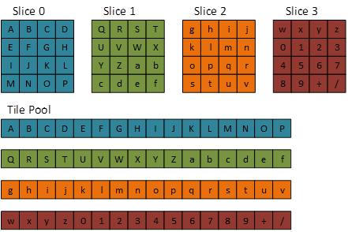
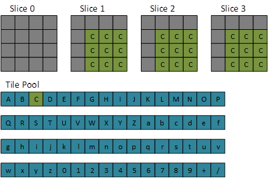
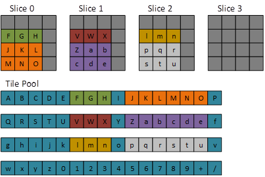

Volume (3D) textures can be used as tiled resources, noting that tile resolution is three-dimensional.
Tiled resources decouple a Direct3D resource object from its backing memory (resources in the past had a 1:1 relationship with their backing memory). This allows for a variety of interesting scenarios such as streaming in texture data and reusing or reducing memory usage.
2D texture tiled resources are supported in Direct3D 11.2. Optional support for 3D tiled textures is available for Direct3D 12 and Direct3D 11.3 (refer to D3D12_TILED_RESOURCES_TIER).
The typical resource dimensions used in tiling are 4 x 4 tiles for 2D textures, and 4 x 4 x 4 tiles for 3D textures.
| Bits/pixel (1 sample/pixel) | Tile dimensions (pixels, w x h x d) |
|---|---|
| 8 | 64x32x32 |
| 16 | 32x32x32 |
| 32 | 32x32x16 |
| 64 | 32x16x16 |
| 128 | 16x16x16 |
| BC 1,4 | 128x64x16 |
| BC 2,3,5,6,7 | 64x64x16 |
Note the following formats are not supported with tiled resources: 96bpp formats, video formats, R1_UNORM, R8G8_B8G8_UNORM, R8R8_G8B8_UNORM.
In the diagrams below, dark gray represents NULL tiles.

The following code sets up a 3D tiled resource at the most-detailed mip.
D3D12_TILED_RESOURCE_COORDINATE trCoord{};
trCoord.X = 1;
trCoord.Y = 0;
trCoord.Z = 0;
trCoord.Subresource = 0;
D3D12_TILE_REGION_SIZE trSize{};
trSize.bUseBox = false;
trSize.NumTiles = 63;

The following code sets up a 3D tiled resource, and the second most detailed mip.
D3D12_TILED_RESOURCE_COORDINATE trCoord;
trCoord.X = 1;
trCoord.Y = 0;
trCoord.Z = 0;
trCoord.Subresource = 1;
D3D12_TILE_REGION_SIZE trSize;
trSize.bUseBox = false;
trSize.NumTiles = 6;

The following code sets up a single tile resource.
D3D12_TILED_RESOURCE_COORDINATE trCoord;
trCoord.X = 1;
trCoord.Y = 1;
trCoord.Z = 1;
trCoord.Subresource = 0;
D3D12_TILE_REGION_SIZE trSize;
trSize.bUseBox = true;
trSize.NumTiles = 27;
trSize.Width = 3;
trSize.Height = 3;
trSize.Depth = 3;

The following code sets up a uniform box tiled resource (note the statement trSize.bUseBox = true;) :
D3D12_TILED_RESOURCE_COORDINATE trCoord;
trCoord.X = 0;
trCoord.Y = 1;
trCoord.Z = 0;
trCoord.Subresource = 0;
D3D12_TILE_REGION_SIZE trSize;
trSize.bUseBox = true;
trSize.NumTiles = 27;
trSize.Width = 3;
trSize.Height = 3;
trSize.Depth = 3;

The same API calls are used for both 2D and 3D tiled resources.
Enums
Structs
Methods